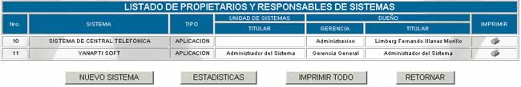

PROPIETARIOS Y RESPONSABLES
Esta opción presenta la siguiente pantalla
principal

Nro;
especifica el número de sistema que se quiere registrar
Sistema; especifica el nombre del sistema registrado
Tipo; especifica la clasificación del sistema registrado.
Nuevo sistema; esta opción presenta la siguiente pantalla principal:
Sistema; Se anota el nombre del Sistema que se registra.
Tipo; la clasificación de tipo se hace en función del manual de procedimientos
del departamento de sistemas y éste puede ser Aplicación, Ofimática,
Sistema Operativo, Base de Datos, Utilitarios y varios.
Unidad de Sistemas Titular; se debe establecer el nombre del responsable titular
del sistema de la Unidad de sistemas
Unidad de Sistemas Suplente; se debe establecer el nombre del responsable suplente
del sistema de la Unidad de sistemas
Dueño Gerencia; se debe nombrar en el nivel de Gerencia de Sistemas,
Auditoria o Legal un dueño, a nombre del quien estará registrado el sistema
Dueño Titular; esta persona es la encargada de comprar o desarrollar
el sistema y por tanto su nombre debe figurar en el registro de patente del
sistema
Dueño Suplente; esta persona es aquella en caso de faltar el dueño gerencial
o el dueño titular se hará cargo de la responsabilidad del sistema
Imprimir; para ver un reporte completo del sistema registrado
haga click sobre el vinculo  y lo obtendrá
y lo obtendrá